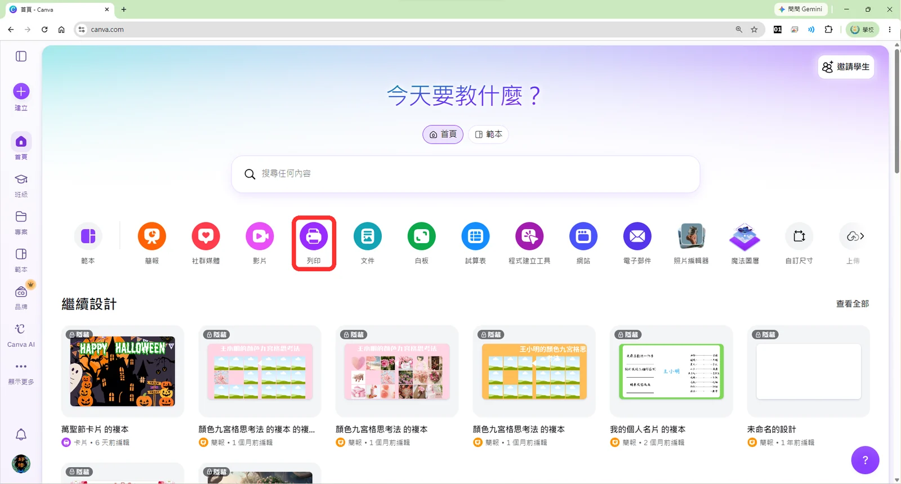
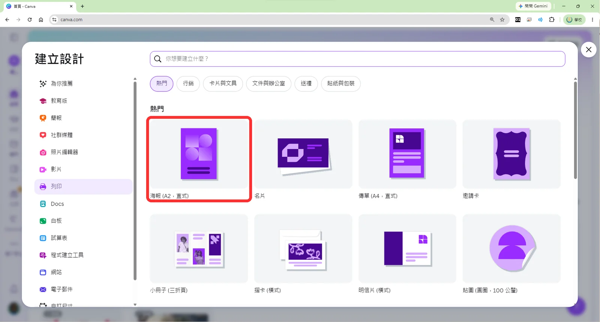
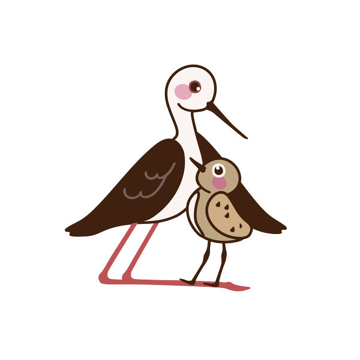
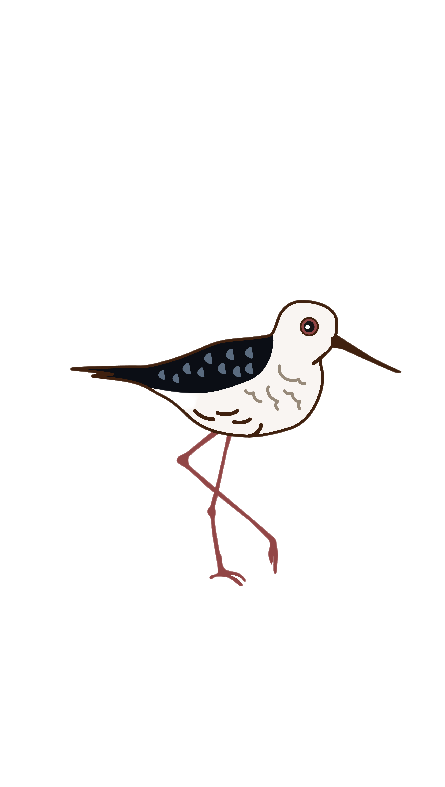
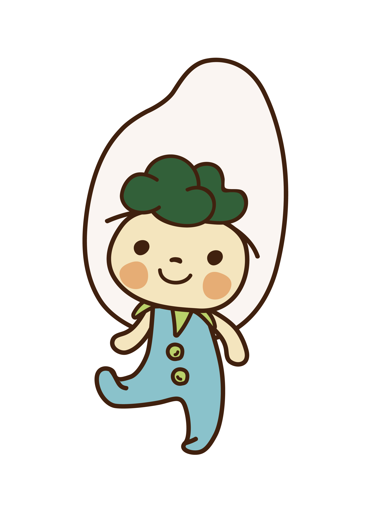
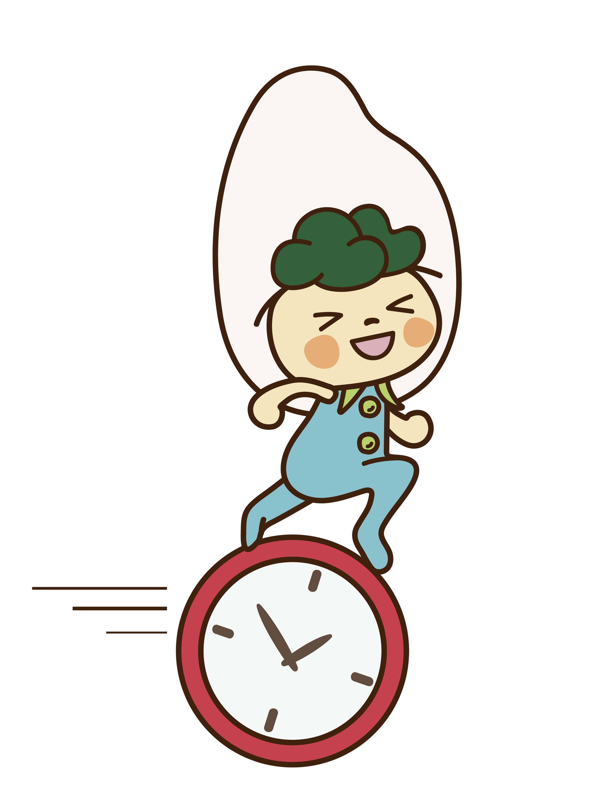
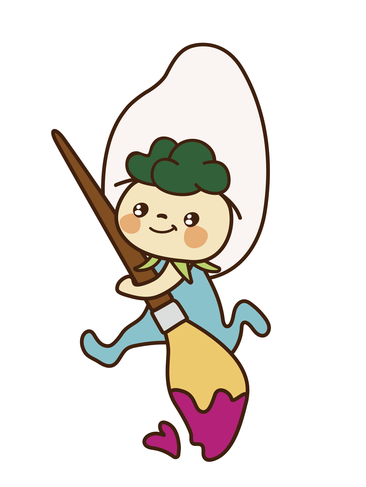
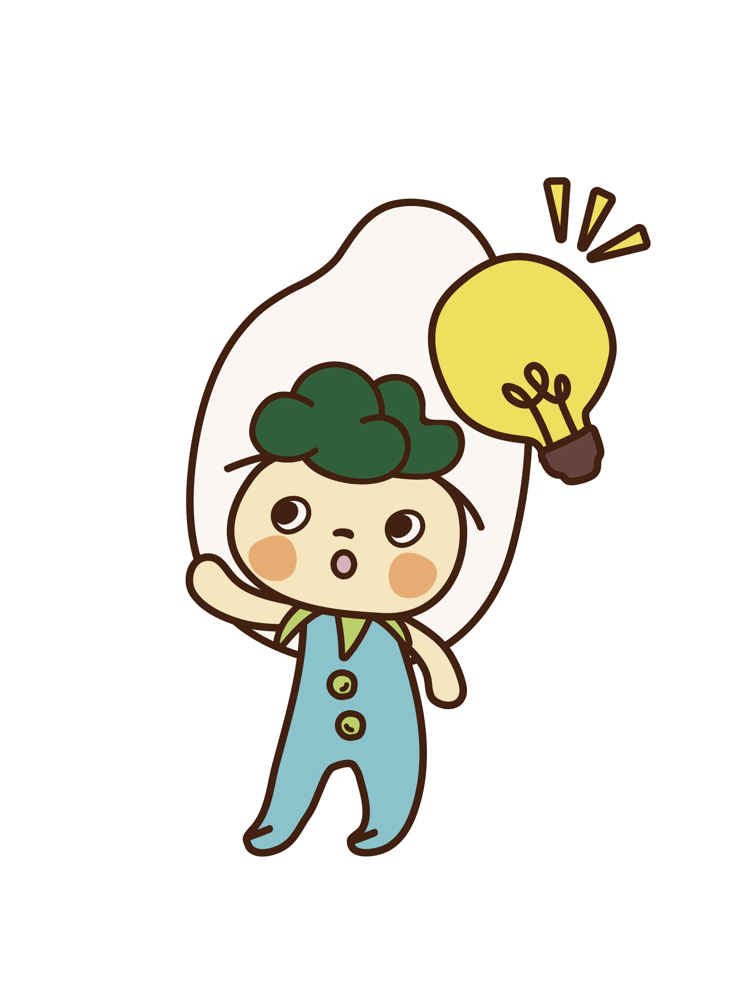
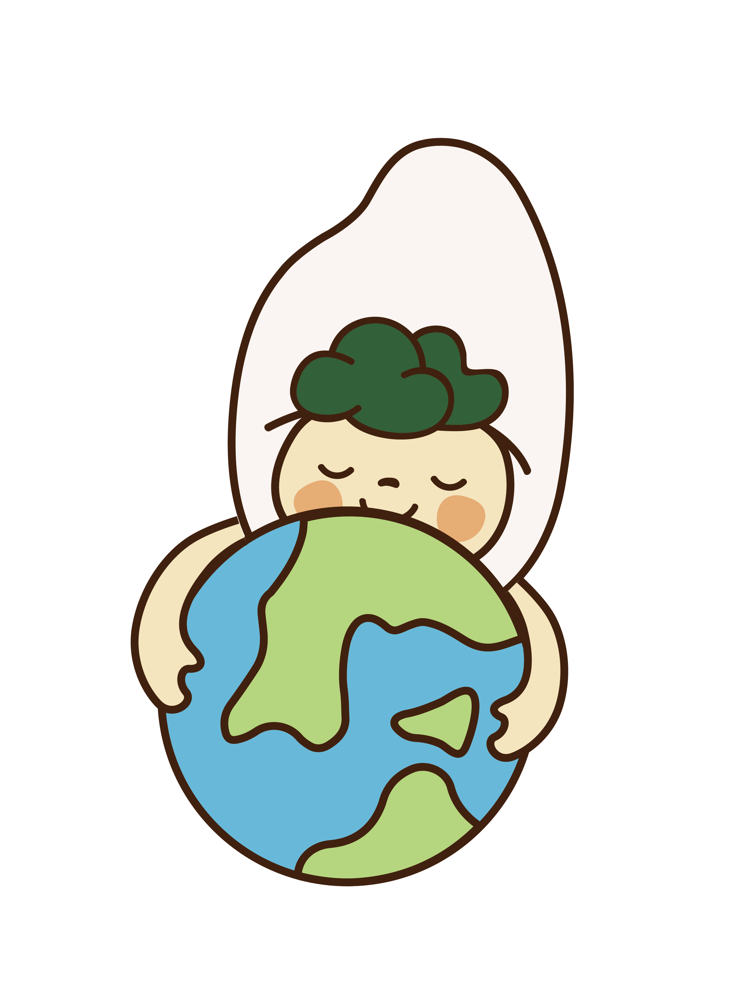

1先看三張真的海報
下面三張都是真實活動的海報。先不要往下滑，一張看十秒，把自己當成剛好路過的人。點海報可以看大張：
💬 跟旁邊的同學討論
- 你的眼睛第一眼看到什麼？
- 這三張分別在辦什麼活動？
- 如果你想去，哪一天、幾點、要去哪裡？海報上都找得到嗎？
- 中間那張是日本的海報。看不懂日文，你還找得到是哪一天嗎？
三張海報裡，哪一張沒有寫幾點開始？
回到上面再找一次。放大來看也可以。
討論完了？看看三張海報各寫了什麼先討論再打開
| 彰化禽品節 | 五木冬祭 | 熱氣球嘉年華 | |
|---|---|---|---|
| 什麼活動 | 2026 彰化禽品節 | 五木の冬祭り（五木村的冬季祭典） | 2026 臺灣國際熱氣球嘉年華 |
| 哪一天 | 9 月 5 日（六） | 2026 年 2 月 8 日（日） | 7 月 4 日～8 月 20 日 |
| 幾點 | 上午 9:30～下午 4:00 | 10:00～15:00 | 沒有寫 |
| 在哪裡 | 員林三和公園 | 五木源公園（日本熊本縣五木村） | 臺東鹿野高台 |
| 有什麼好玩的 | 環保知識小遊戲，完成可以領禮品 | 放風箏、抽獎、美食和特產 | 只寫一句「與吉伊卡哇一起翱翔台東天空！」 |
| 誰辦的 | 沒有寫（只提到環保局的攤位） | 最下面有寫：五木祭典執行委員會、五木村教育委員會 | 最下面有標誌：臺東縣政府 |
2活動海報要回答五個問題
把三張海報放在一起比，就看得出來：路過的人想知道的事，其實就是這五個問題。
1. 什麼活動
活動的名字。三張海報最大的字都是它。
2. 什麼時候
哪一天、幾點開始、幾點結束。
3. 在哪裡
要寫到找得到路。只寫「公園」，大家不知道是哪一個公園。
4. 有什麼好玩的
去了可以做什麼。這是讓人想去的原因。
5. 誰辦的
主辦的單位。有問題的時候，才知道要找誰。
再回頭看一次表格：活動名稱、哪一天、在哪裡，三張海報全部都有寫。這三件事少了任何一個，看的人就去不了——不知道是什麼活動、不知道哪一天、不知道要去哪裡。
🔍 再多看一眼
- 重要的字放大。日本那張的「2.8」放得很大，所以就算看不懂日文，也一眼找得到日期。
- 先回答大家可能會問的事。日本那張寫了「雨天決行」，意思是下雨也照常舉行（小字補充：也可能取消）；禽品節寫了「數量有限送完為止」，先告訴大家禮品不一定拿得到。
3換你想：校慶海報要寫什麼？
剛剛你是看海報的人，現在換你當做海報的人。校慶的資訊都在這裡：
📋 校慶的資訊
- 活動：好修國小123周年校慶科學園遊會
- 日期：115年11月21日
- 時間：08:00~12:00
- 地點：好修國小
- 主辦單位：好修國小
對照五個問題，這裡回答了四個，還少「有什麼好玩的」。你可以想一句讓人想來的話放上去，像老師的範例寫「玩科學・逛園遊・慶校慶」；如果想寫真正的節目內容，先問過老師，海報上的資訊一定要是真的。
🤔 動手之前先想兩件事
- 你的海報是要給誰看的？同學、老師、家長，還是住在學校附近的人？
- 這幾行資訊裡，你想讓誰最大？路過的人第一眼會看到什麼？
4開一張新的海報
這次要自己開一張新的設計。到 Canva 首頁，在搜尋框下面那一排圓形圖示裡，找到列印：

畫面會跳出「建立設計」視窗，有各種尺寸可以選。選第一個海報 (A2，直式)，就會進到編輯畫面：

5海報素材，要不要用你決定
下面是老師準備的學校素材，可以用，也可以都不用。想用哪一張，就把它複製到 Canva：
在圖片上按右鍵
→
複製圖片
→
回到 Canva
→
Ctrl + V 貼上
















.jpg)
.jpg)
.jpg)
⚠️ 貼上之後怪怪的？
如果貼不上去，或背景多了一塊顏色，就按圖片下面的下載，再到 Canva 左邊的上傳把檔案傳進來。
6換你創作：做出校慶海報
接下來沒有一步一步的截圖了。版面、顏色、字體全部由你決定，你在前面三課學過的都用得上。做完一項就點一下打勾：
✋ 動手做
做完一項，就點一下下面的格子打勾 👇
0 / 5
- 放上校慶的活動、日期、時間、地點、主辦單位
- 把你覺得最重要的字放到最大
- 挑背景和顏色，確認每一行字都看得清楚
- 決定要不要用海報素材，或自己找照片和圖案
- 做好以後下載成 PNG（方法在第 1 課）
👀 交作品之前：十秒鐘測試
請旁邊的同學看你的海報十秒鐘，然後蓋起來問他：這是什麼活動？什麼時候？在哪裡？三題都答得出來，你的海報就會自己回答問題了。答不出來的那一題，就回去把它改大、改清楚。